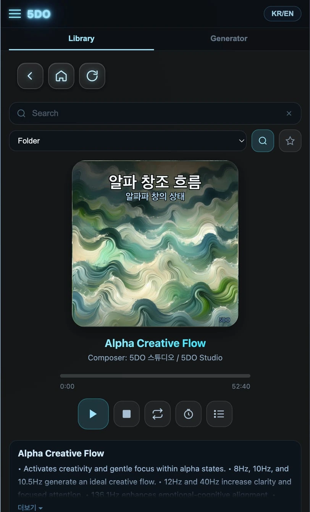
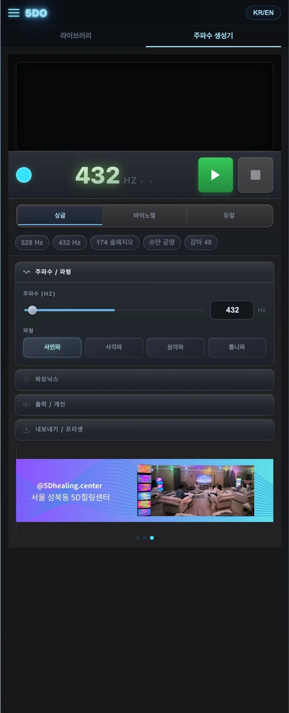

당신의 리듬으로,
당신의 공간을 세팅하는 5DO
5DO는 라이브러리와 주파수 생성기를 한 곳에서 제공하는 PWA 오디오 플랫폼입니다. 이어폰·스피커는 물론 Quantum Torus X 사용 워크플로우까지 지원하고, 한/영 토글로 누구나 편하게 접근할 수 있습니다.

복잡하지 않게, 그러나 충분히 깊게
좋은 도구는 사용자의 주도권을 빼앗지 않습니다. 5DO는 “내 상태를 내가 선택한다”는 흐름을 유지하도록, 실행·선택·재생·출력·언어 전환을 짧은 동선으로 설계했습니다.
핵심 기능 5
목적별 콘텐츠를 빠르게 선택하고 재생.
필요한 파라미터를 직관적으로 조절.
내 환경에 맞춰 편하게 재생.
장치와 함께 사용하는 흐름을 지원.
언어 전환으로 접근성과 확장성 강화.
홈 화면에 고정해 앱처럼 사용.
앱 화면
아래 4장은 5do.app에서 네가 직접 캡처해서 파일만 교체하면 됩니다.


설치 가이드 (PWA)
설치는 선택입니다. 자주 쓰는 기기에서만 홈 화면에 추가하면 가장 편해요.
“홈 화면에 추가”를 눌러 설치하세요.
메뉴에서 “앱 설치” 또는 “홈 화면에 추가”.
주소창의 설치 아이콘이 보이면 클릭.
FAQ
설치해야만 사용할 수 있나요?
아니요. 링크로 바로 실행됩니다. 자주 쓰는 기기에서만 PWA로 설치하면 더 편합니다.
이어폰/스피커/블루투스에서 재생되나요?
대부분 가능합니다. 오디오 출력은 운영체제의 출력 설정(블루투스/유선/외부앰프)을 따릅니다.
Quantum Torus X 출력은 어떻게 쓰나요?
사용 환경(앰프/케이블/블루투스 등)에 따라 연결 흐름이 달라질 수 있습니다. 5DO는 해당 사용 루틴을 고려한 재생/출력 워크플로우를 지원합니다.
한/영 토글은 어디서 하나요?
앱 상단 또는 설정 메뉴에서 언어를 전환할 수 있습니다. (실제 UI 위치에 맞춰 문구를 조정하세요.)